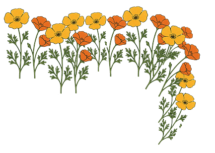
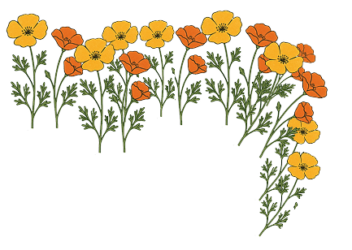

I build human-first tech that listens, learns, and lifts people up.
Hi! I am Maya, a CS student with a focuses on end-to-end product design. My passion sits at the intersection of technical problem-solving and user-driven design, motivated by a deep curiosity in AI and its potential to amplify the best parts of humanity. Stay a while and take a look at my work!